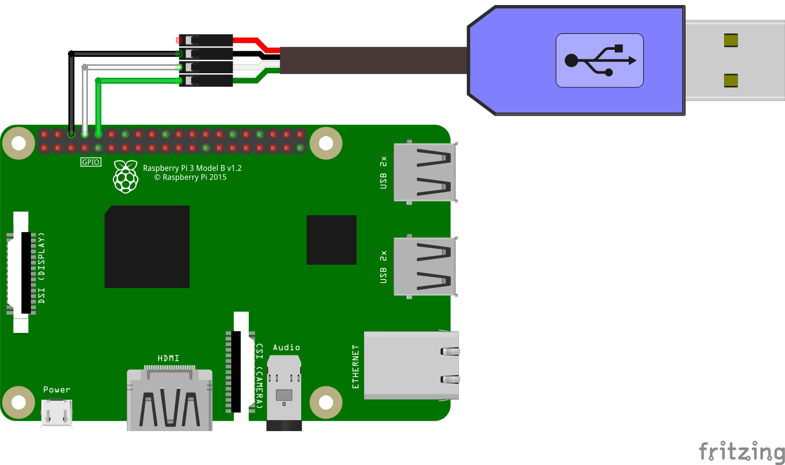

Open Sensor Network Run by IPFS
Robonomics allows you to build a peer-to-peer communication between you and a sensor. So it becomes possible to get data from your sensor all around the world. Those data is not stored in a blockchain but packed in rosbag format which is convenient to work with and transfered via IPFS network.
At this page you'll find step-by-step instruction to connect SEN0233 sensor to Raspberry Pi 4 and make it publish data on demand.
After reading this article you should get the main idea and be able to connect any desired sensor.
Note
All of the following steps are done on Linux
Requirements
- SEN0233
- PM2.5 Sensor Adapter
- Raspberry Pi 4
- SD Card >=16Gb
1. Prepare Raspberry Pi 4
1.1 Get the image
The latest AIRA image can be found here
wget https://aira.life/channels/aira-unstable/aira-image-rpi4-20.03pre-git-aarch64-linux.img
1.2 Write the image on to a SD card
sudo dd if=aira-image-rpi4-20.03pre-git-aarch64-linux.img of=/dev/sda bs=4M status=progress sync
1.3 Boot with the SD card
Plug in the SD card and connect a power supply to the board. Wait a couple of minutes.
By default OS has root user with empty password. There are a few ways to log in.
First - using UART-USB cable. Connect the cable as shown below:
- Black to 6th pin
- White to 8th pin (TXD)
- Green to 10th pin (RXD)
Check the official documentation out.

The connection is the same for Raspberry Pi 3 and 4.
Then on your laptop run:
screen /dev/ttyUSB 115200
And you should see something similar to:
<<< Welcome to NixOS 20.03pre-git (aarch64) - ttyS0 >>>
aira-rpi4 login: root (automatic login)
Starting...
_ ___ ____ _
/ \ |_ _| _ \ / \
/ _ \ | || |_) | / _ \
/ ___ \ | || _ < / ___ \
/_/ \_\___|_| \_\/_/ \_\
My Ethereum address is "38411681740ca6214b448d49549bb1dfd0a0cffa"
Look me at https://status.robonomics.network by "Qmdiiux3uQS8JyuPNa7Vj3iNe7UZBrpMPB2dEqUeo4YRGH"
Note
Save somewhere your ethereum address generated by the OS. You'll need it later.
By default sshd service is up and running. All you need to do is to add your SSH key:
mkdir .ssh/ curl -sSL https://github.com/<USERNAME>.keys >> .ssh/authorized_keys
It's recommended to add your SSH key to Github account help
If you don't have a key attached to your github account then simply put the content of your ~/.ssh/id_rsa.pub file to /root/.ssh/authorized_keys file on the SD card.
Another way to put the key is to unplug the SD card, plug it in a laptop and do above steps manually.
After that you should be able to connect to the board via SSH:
ssh root@<RASPBERRY_PI_ADDRESS>
1.4. Remove blocking parameters
You'll attach the sensor to GPIO pins which are currently are configured for UART connection.
Open /boot/cmdline.txt and remove everything related to console. In the end it must look like:
cma=256M loglevel=7 init=/nix/store/nlh5fcbb1cj36kn0m2pfvqs7w6dd127w-nixos-system-aira-rpi4-20.03pre197163.0c9d9518676/init
Reboot
reboot
2. Connect SEN0233
Connect the sensor as shown below:
3. Run the Agent
The agent must be run under liability user
su liability cd
Now clone the repository and build the agent:
git clone https://github.com/Vourhey/sen0233_sensor_agent/ cd sen0233_sensor_agent nix build -f release.nix
Run the agent:
source result/setup.bash roslaunch sensors_pack_agent agent.launch
Note
Don't hesitate to check the repository out. You'll see how easily the sensor can be replaced with any other
4. Test
To test everything works as expected go to the Dapp:
https://dapp.robonomics.network/#/sensors/airalab/QmWjvXGfVUDBNR15BBH5ERGP3SzEKbeLZWx7Fcp4kwwaw9/0x<YOUR_ETHEREUM_ADDRESS>/
where <YOUR_ETHEREUM_ADDRESS> is the address generated by OS on step 1.3.
To find out the address again you can run:
rosservice call /eth/accounts